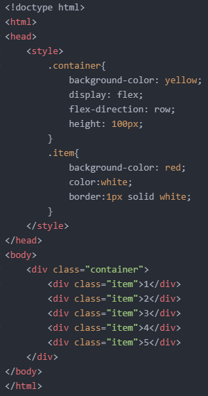
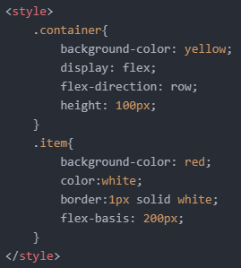
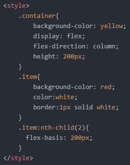
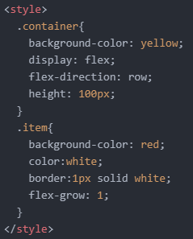
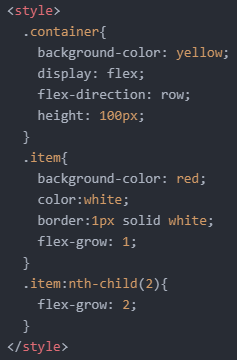
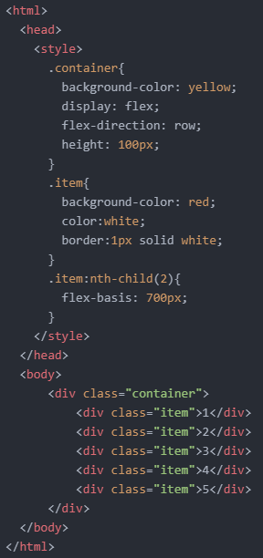
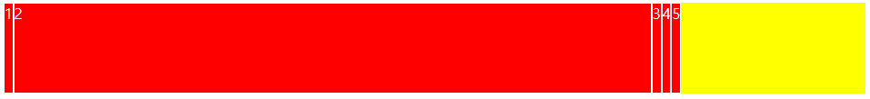
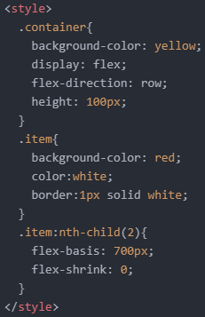
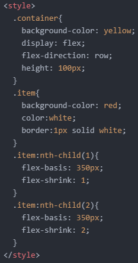
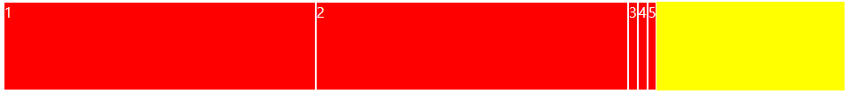

- Flex에 대해 알아보기 2
그럼 지난 화요일에 이어 'flex'에 대해 더 알아보겠습니다.
오늘은 위 속성들 중에서 'flex-basis/grow/shrink' 속성에 대해 알아보려고 합니다.
그럼 'flex-basis' 속성부터 알아보겠습니다.
'flex-basis' 속성을 이용하면 요소의 크기를 조정할 수 있습니다.
예를 들어, 다음과 같은 코드가 있습니다.

여기서 자식 요소들의 크기를 200px로 늘려보려고 합니다.
그러기 위해선 다음과 같이 'flex-basis' 속성을 적용시켜주면 됩니다.

이때 주의할 점은 요소의 방향에 따라 크기가 늘어나는 방향이 결정된다는 것입니다.
위 코드를 보면 'flex-direction'이 'row'로 지정되어 있는 것을 알 수 있습니다.
정렬된 방향 즉, 행방향으로 크기가 200px로 늘어난다는 것이죠.
그럼 flex-direction: column'일 경우는 다음과 같이 되겠죠.
(확실한 결과를 위해 container 클래스 선택자의 높이 값을 100px에서 200px로 변경했습니다.)
만약 자식 요소들 중 하나만 골라서 크기를 변경해 주고 싶다면, '선택자:nth-child(숫자)' 코드를 적용해 주면 됩니다.
이름에서 알 수 있듯, 'nth-child'는 'n번 째-자식'을 의미합니다.
'숫자'에 2를 넣어주면, 두 번째 자식 요소에 해당 속성을 적용하겠다는 의미가 됩니다.
저는 다음과 같이 코드를 작성했습니다.

그럼 위와 같이 두 번째 자식 요소만 크기가 200px로 바뀐 것을 알 수 있습니다.
다음으로는 'flex-grow' 속성을 알아보겠습니다.
이 친구는 비율을 이용해 크기를 늘려주는 속성입니다.
다음과 같은 코드가 있습니다.
여기서 'flex-grow: 1;'과 같은 코드를 적용하면 자식 요소들은 각각 행방향으로 전체 영역의 1/n에 해당하는 영역을 나눠가지게 됩니다.
다음과 같이 말이죠.

그렇다면 다음과 같이 하나의 자식 요소에만 적용시키면 어떻게 될까요?
바로 위와 같은 결과가 나오게 됩니다.
두 번째 자식 요소에만 'flex-grow: 1;'을 적용했기 때문에 노란색 영역을 5개의 자식 요소가 각각 1/5 만큼 나눠가지는 것이 아니라, 두 번째 요소가 1/1만큼 가지게 되는 것입니다.
그럼 만약 모든 자식 요소들이 1/5만큼의 영역을 나눠가진 상황에서, 두 번째 요소에 'flex-grow: 2'를 적용하면 어떻게 될까요?
이를 코드로 나타내면 다음과 같습니다.

우선 'flex-grow: 1;' 선언에 따라 전체 영역을 1/5로 나누고 5개의 자식 요소들이 이를 나눠가지게 됩니다.
그런데 하나의 자식 요소에 'flex-grow: 2;' 선언을 해주는 순간, 전체 영역을 1/6로 나누게 됩니다.
(앞서 배운 우선순위에 따라 'flex-grow: 2;'의 영향력이 'flex-grow: 1; 보다 크기 때문입니다.)
그렇게 하나의 자식 요소가 전체의 2/6에 해당하는 영역을 가지게 되고 나머지 자식 요소들이 각각 1/6만큼 나눠가지게 됩니다.
아래와 같이 말이죠.
같은 이유로, 하나의 자식 요소에 'flex-grow: 3;'을 선언했다면 전체의 3/7 영역을 하나의 자식 요소가 가지게 되고 나머지 요소들은 각각 1/7의 영역을 가지게 됩니다.
마지막으로, 'flex-shrink' 속성을 알아보겠습니다.
다음과 같은 코드가 있습니다.


이 상태에서 화면창의 크기를 줄여보면 아래와 같이 '여유 공간이 있는' 두 번째 자식 요소의 영역만 줄어드는 것을 알 수 있습니다.
이때 다음과 같이 'flex-shrink: 0;' 코드를 적용해 주면 해당 요소의 영역이 줄어드는 것을 방지할 수 있습니다.

참고로 속성값이 1일 때가 기본 설정입니다.
그러면 코드가 다음과 같을 땐 어떻게 될까요?

첫 번째 자식 요소는 1/3 만큼의 영역을, 두 번째 자식 요소는 2/3 만큼의 영역을 분담하기 때문에, 여유 공간이 더 많은 두 번째 자식 요소의 영역이 더 빠르게 줄어들게 됩니다.
숫자가 더 큰 쪽이 더 빨리 줄어든다고 생각하면 됩니다.
아래와 같이 말이죠.

오늘은 여기까지 하겠습니다.
그럼 내일도 화이팅!